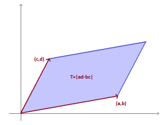
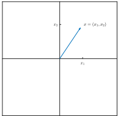

Gazdasági Matematika 2 - Teljes Fogalomtár
Az Első ZH teljes elméleti anyaga: Mátrixok, Vektorterek, LER, Leképezések, Kvadratikus formák és Euklideszi terek.
1. Mátrixok és Műveletek
Mátrix: m sorból és n oszlopból álló számtáblázat (m×n-es mátrix).
Négyzetes mátrix: A sorok és oszlopok száma egyenlő (n = m).
Főátló: A négyzetes mátrix a11, a22, ..., ann elemei.
Diagonális mátrix: A főátlón kívüli összes elem nulla.
Háromszögmátrix: Felső, ha a főátló alatt, alsó, ha a főátló felett minden elem nulla.
Egységmátrix (E vagy I): Főátlójában csupa 1-es áll, többi elem 0.
Transzponált (AT): A mátrix sorainak és oszlopainak felcserélésével kapott mátrix.
Szimmetrikus mátrix: Olyan négyzetes mátrix, amelyre igaz, hogy A = AT.
Determináns: Négyzetes mátrixhoz rendelt valós szám, amely megmutatja a leképezés terület/térfogat változtató hatását.
Reguláris mátrix: det(A) ≠ 0. Ilyenkor a mátrix invertálható.
Szinguláris mátrix: det(A) = 0. Ilyenkor a mátrix NEM invertálható.
Invertálható mátrix: Az A mátrixhoz létezik olyan B mátrix, hogy AB = BA = E. Jele: A-1.
Mátrix rangja: A lineárisan független sorok (vagy oszlopok) maximális száma. Gauss-eliminációval számoljuk (a nem csupa nulla sorok száma a lépcsős alakban).

A determináns geometriai jelentése: a kifeszített paralelogramma területe (T = |ad - bc|)
2. Az Rn tér szerkezete és Alterei
Altér: A vektortér olyan nemüres részhalmaza, amely maga is vektortér (zárt az összeadásra és a skalárral való szorzásra).
Triviális alterek: Minden vektortérnek altere önmaga (V) és a csak a nullvektorból álló halmaz {0}.
R2 alterei: {0}, az origón átmenő egyenesek, és a teljes sík (R2).
R3 alterei: {0}, origón átmenő egyenesek, origón átmenő síkok, teljes tér (R3).
Lineáris kombináció: Vektorok skalárokkal vett szorzatainak összege: λ1v1 + ... + λkvk.
Kifeszített / Generált altér: Egy vektorrendszer összes lehetséges lineáris kombinációja által alkotott altér.
Generátorrendszer: Olyan vektorrendszer, amely az egész teret generálja (kifeszíti).
Lineáris függetlenség: A vektorrendszer független, ha a nullvektor csak csupa nulla együtthatóval (triviális módon) állítható elő belőlük.
Bázis: Lineárisan független generátorrendszer (a tér "vázlata").
Dimenzió: A bázisban található vektorok száma.
Koordináták: Azok az egyértelmű skalárok, amelyekkel egy vektor a bázisvektorokból lineárisan kombinálható.

Vektorok ábrázolása és koordinátái az R2 térben
3. Lineáris Egyenletrendszerek (LER)
Megoldhatóság: Egy LER akkor megoldható, ha létezik legalább egy megoldásvektor.
Határozott: Pontosan egy megoldása van.
Határozatlan: Végtelen sok megoldása van.
Ellentmondásos: Nincs megoldása.
Homogén/Inhomogén: Homogén, ha a szabad tagok (b vektor) mind nullák (Ax=0). Inhomogén, ha nem.
Rangkritérium (Kronecker-Capelli tétel):
Az Ax = b LER pontosan akkor oldható meg, ha rang(A) = rang(A|b).
4. Lineáris leképezések, Sajátérték, Sajátvektor
Lineáris transzformáció: Olyan leképezés, amely megőrzi a műveleteket: additív f(x+y) = f(x)+f(y) és homogén f(λx) = λf(x).
Sajátérték (λ): Az a skalár, amelyre az Ax = λx egyenletnek van a nullvektortól eltérő megoldása.
Sajátvektor (x): Az a nemnulla vektor, amelyet a leképezés (az A mátrix) nem forgat el, csak nyújt vagy zsugorít (Ax = λx).
Karakterisztikus egyenlet: det(A - λE) = 0
(Ennek a polinomnak a gyökei adják a sajátértékeket)
5. Kvadratikus formák és Definitség
Kvadratikus forma: Homogén másodfokú polinom, amely mátrixosan Q(x) = xTAx alakban írható fel, ahol A egy szimmetrikus mátrix.
Definitségi kategóriák (Sajátértékek alapján):
- Pozitív definit: Minden sajátérték pozitív (λi > 0). Ekkor Q(x) > 0 minden nemnulla x-re.
- Pozitív szemidefinit: Minden sajátérték nemnegatív (λi ≥ 0).
- Negatív definit: Minden sajátérték negatív (λi < 0). Ekkor Q(x) < 0 minden nemnulla x-re.
- Negatív szemidefinit: Minden sajátérték nempozitív (λi ≤ 0).
- Indefinit: Vannak pozitív és negatív sajátértékek is.
Sylvester-kritérium (Főminorok): Ha nem akarunk sajátértéket számolni, a főminor determinánsok (a bal felső sarkokból képzett al-determinánsok) előjeléből is eldönthető a definitség (pl. pozitív definit, ha minden főminor > 0).
6. Euklideszi terek és Belső szorzat
Skaláris (belső) szorzat: Legyen A egy szimmetrikus, pozitív definit mátrix. Az ⟨x, y⟩A = xTAy kifejezést skaláris szorzatnak nevezzük.
Vektor normája (hossza): A skaláris szorzatból származtatva: ||x|| = √⟨x, x⟩ = √(xTAx).
Vektorok által bezárt szög: cos(φ) = ⟨x, y⟩ / (||x|| · ||y||).
Cauchy-Schwarz egyenlőtlenség: Két vektor skaláris szorzatának abszolút értéke nem haladja meg a normáik szorzatát: |⟨x, y⟩| ≤ ||x|| · ||y||.
Ortogonalitás: Két vektor ortogonális (merőleges egymásra), ha skaláris szorzatuk nulla (⟨x, y⟩ = 0).
Ortogonális mátrix: Olyan négyzetes mátrix, amelynek transzponáltja megegyezik az inverzével: QT = Q-1 (azaz QTQ = E). Oszlopai ortonormált bázist alkotnak.
Spektráltétel: Minden valós szimmetrikus mátrix ortogonálisan diagonalizálható (létezik sajátvektorokból álló ortonormált bázisa).